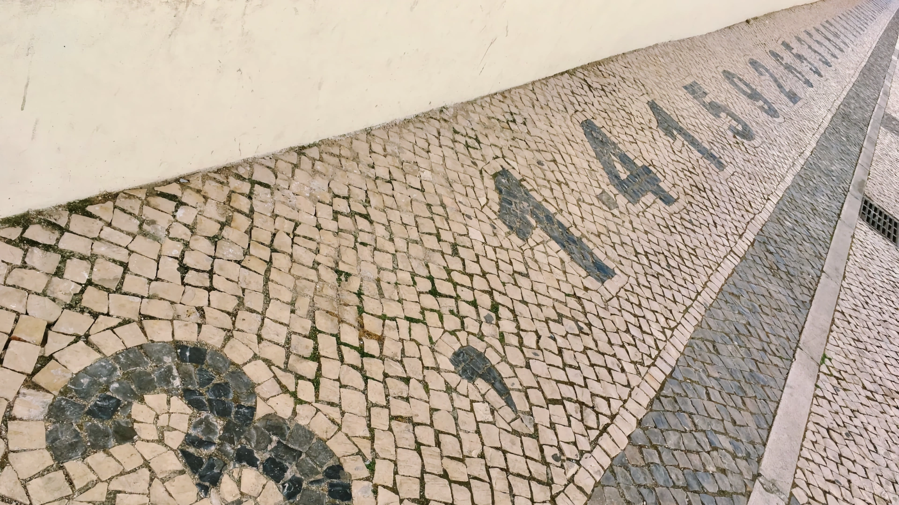

Happy birthday mister Einstein, happy Pi Day to you!


Pi Day is the day on which we commemorate Albert Einstein’s (1879–1955) birthday[cite: 91]. Also, people celebrate the existence of \(\pi\) as today is 3/14, forming the first three digits of the number \(\pi\) in the American date format[cite: 91]. Some Western European critics—on Twitter, for example—have stated one oughtn’t as “we, here” simply do not use the American date format[cite: 91]. Of course, nearly the whole rest of the world does not use the American date format, but it hasn’t stopped cheerful people from all over that same rest of the world celebrating and putting mathematics into the limelight once a year[cite: 91].
In 1988, a physicist named Larry Shaw (1939–2017), while working at the Exploratorium science museum in San Francisco, came up with the idea of celebrating mathematical constants on March 14th (Figure 1)[cite: 91]. What started out as eating fruit pie with colleagues became a beloved public tradition[cite: 91]. At 1:59 pm—yielding the next digits 3.14159—a circular parade would wind through the museum with visitors carrying digits of \(\pi\), eating pie, and singing happy birthday to Albert Einstein[cite: 91].


Bouncing blocks and counting collisions
Speaking of “humble pi”, stand-up mathematician Matt Parker published a book titled Humble Pi and demonstrated how classical mechanics can approximate \(\pi\) using a balancing beam (Figure 3)[cite: 91].

One of the most fascinating places where pi pops up is where billiard balls bounce against each other and the cushion on the inner rail of a billiard table[cite: 91]. Gregory Galperin at the Department of Mathematics of the Eastern Illinois University wrote a paper demonstrating how pi could be obtained in a jaw-droppingly awesome way[cite: 91].
The New York Times published a blog post about it in 2014 but not before the YouTube channel Numberphile—another favourite—had professor Ed Copeland explain it already in 2012[cite: 91].
Recently, however, the YouTube channel 3Blue1Brown published a video about it too[cite: 91]. (Yes, the channel is also a favourite.)[cite: 91]
It features a gorgeous simulation and is somehow very pleasing to the ears[cite: 91]. Also, Grant Sanderson, the mathematician behind the voice and videos, does a great job of visually deciphering the language of the universe[cite: 91]. Do have a look[cite: 91]. He then gives the answer as to “but how” and “why at all” in a second video[cite: 91].
If you haven’t seen it, do support your chin firmly with your hand while letting the video play out as it may gravitate towards the centre of Earth, radially (Figure 4)[cite: 91].

A smaller block of mass \(m_1 = 1\text{ kg}\) sits between a wall and a larger block of mass \(m_2\)[cite: 91]. The larger block is sent sliding toward the smaller block[cite: 91]. The blocks undergo completely elastic collisions with each other and the wall[cite: 91].
If the mass ratio of the two blocks is set to powers of 100[cite: 91]:
- When \(m_2 = 1\text{ kg} = 100^0\text{ kg}\), the total number of collisions is 3[cite: 91].
- When \(m_2 = 100\text{ kg} = 100^1\text{ kg}\), the total number of collisions is 31[cite: 91].
- When \(m_2 = 10{,}000\text{ kg} = 100^2\text{ kg}\), the total number of collisions is 314[cite: 91].
- When \(m_2 = 100^N\text{ kg}\), the total number of collisions reproduces the first \(N+1\) digits of \(\pi\)[cite: 91]!
As Grant Sanderson wonderfully visualised on 3Blue1Brown, the conservation of kinetic energy \(\left(\dfrac{1}{2}m_1 v_1^2 + \dfrac{1}{2}m_2 v_2^2 = E\right)\) forms an ellipse in phase space, which transforms via rescaled coordinates into a circle[cite: 91]. Each physical collision corresponds to a step around that circle, connecting collision dynamics to the arc length and geometry of \(\pi\)[cite: 91].
Image credits and references
- Featured image: Pavement digits of \(\pi\) in Faro by KJ Runia (CC BY 4.0)[cite: 91].
- Photo of Larry Shaw at the San Francisco Exploratorium by Ronhip (CC BY-SA 3.0)[cite: 91].
- Video stills courtesy of Matt Parker (Stand-up Maths) and Grant Sanderson (3Blue1Brown)[cite: 91].
- Galperin, G. (2003). “Playing pool with \(\pi\) (the number \(\pi\) from a billiard point of view)”, Regular and Chaotic Dynamics, 8(4), pp. 375–394. doi: 10.1070/RD2003v008n04ABEH000252[cite: 91].